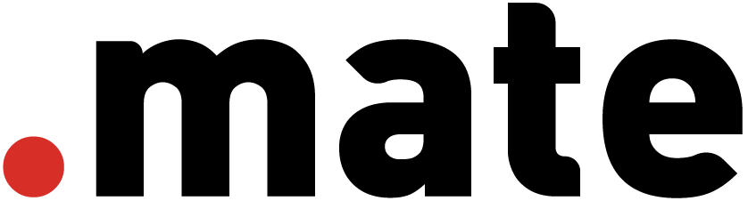

처음엔 쇼핑몰 관리자 화면 하나로 충분했습니다. 상품 올리고, 주문 받고, 배송 보내고.
도매를 시작하자, 화면에 없는 일이 커지기 시작합니다. 거래처마다 다른 단가, 메신저로 오는 주문.
들어갈 자리가 없는 일은 결국 엑셀로 갑니다. 매일, 사람 손으로.
닷메이트는 이 일들의 모양대로 시스템을 다시 짓습니다. 빨간 점이 붙은 일은 AI가 맡습니다.
.ax commerce엑셀로 하던 도매 단가 관리, 메신저로 받던 도매 주문, 손으로 맞추던 채널별 재고를 쇼핑몰 시스템 안으로 들여옵니다. 사업이 커지면 매달 같이 늘립니다.
연 매출 30억에서 300억, 운영 인원 5명에서 50명. 아래 중 매일 하는 일이 있다면 눌러 보세요.
닷메이트가 사라지면, 우리 시스템은요?
계약 첫날부터 코드를 고객님 회사 저장소에 올립니다. 저희는 그 저장소에 작업을 올리는 쪽이고, 소유자는 처음부터 고객님입니다. 소유권 이전은 약속이 아니라 지금 상태입니다.
옮기다가 매출이 멈추면요?
새 시스템이 다 준비될 때까지 지금 쇼핑몰은 그대로 돌아갑니다. 옮길 때 확인하는 목록을 그대로 공개합니다.
결국 또 매달 내는 구독 아닌가요?
매달 내는 금액에 개발 시간이 들어 있습니다. 매월 이번 달 무엇이 늘었는지 리포트로 받습니다. 약정이 끝나면 시스템은 고객님 것입니다.
무료 업무 진단은 여기서 시작합니다. 적어주신 일이 그대로 진단의 재료가 됩니다.